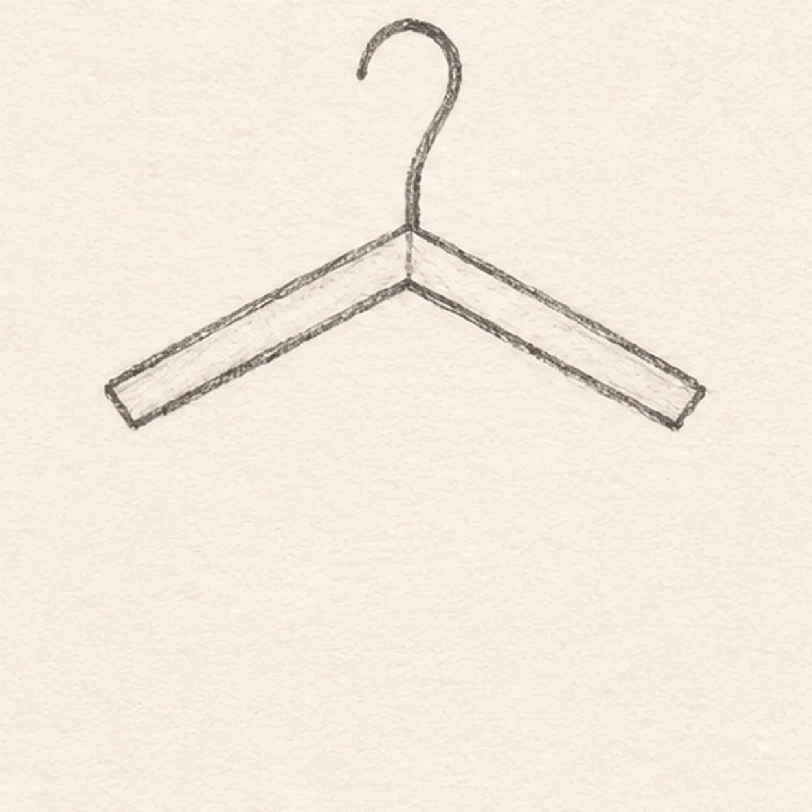
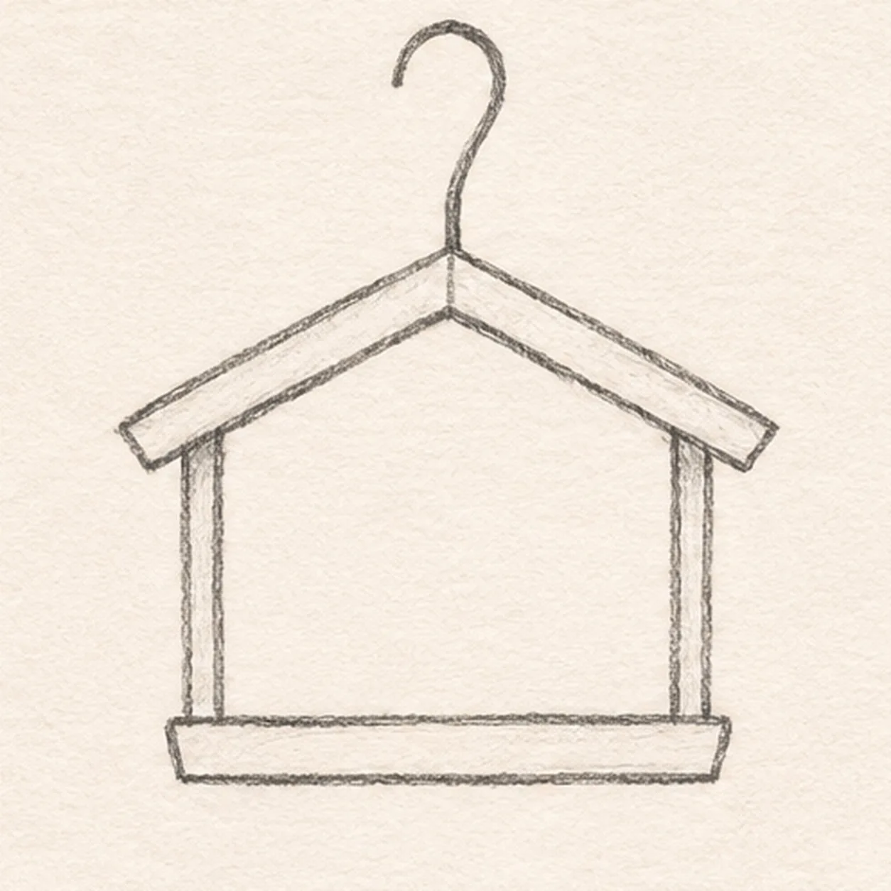
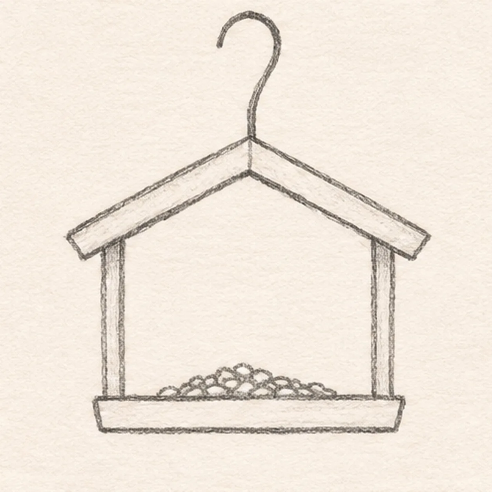
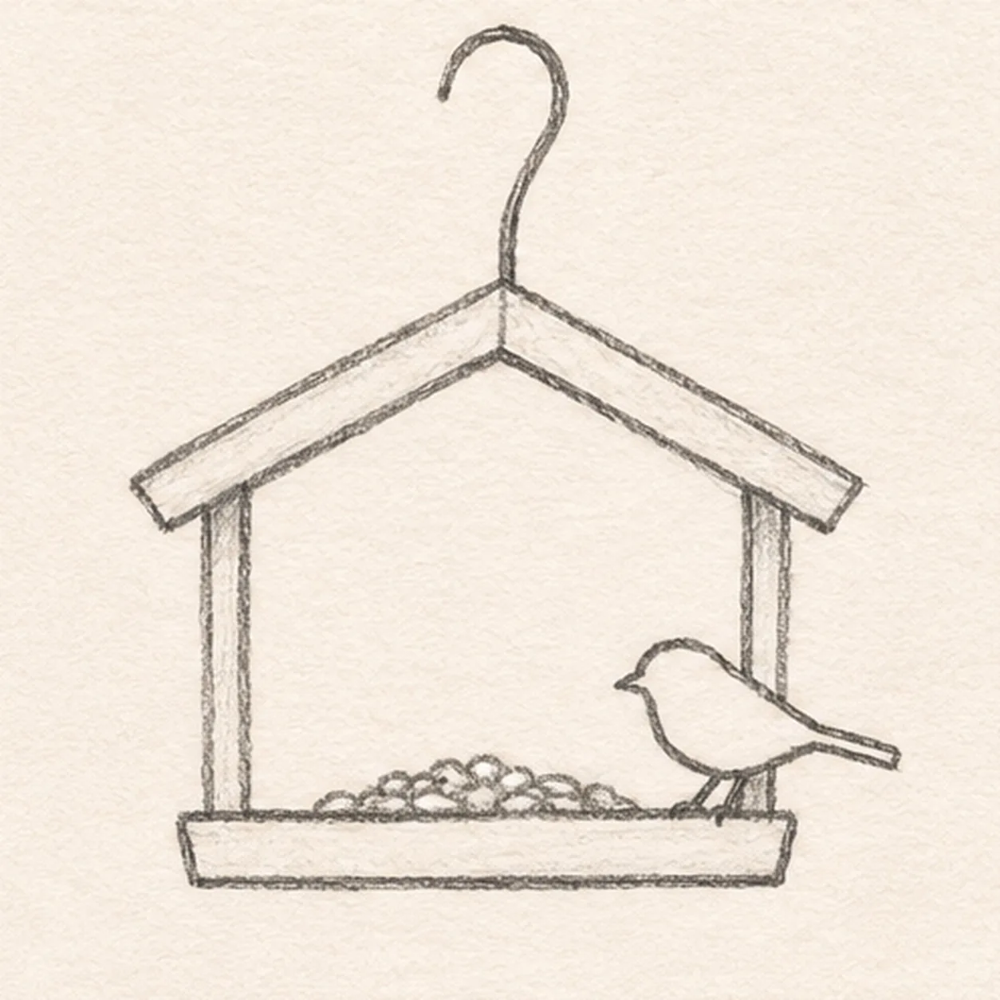
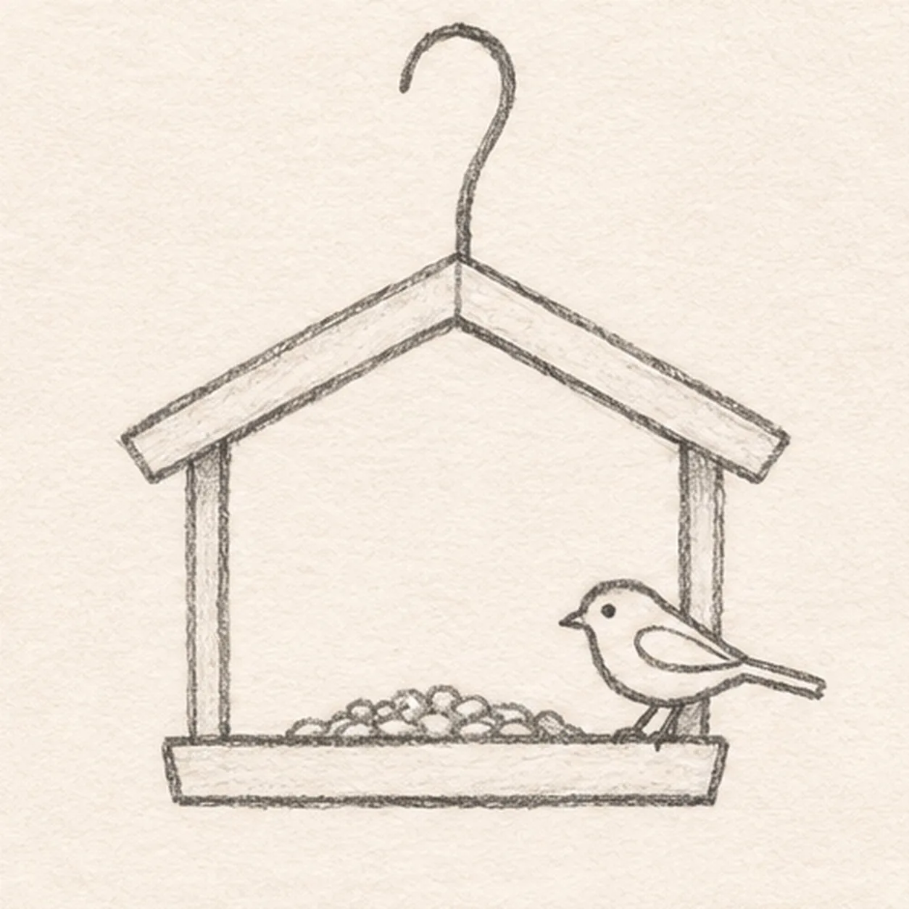

Pencil ready?
Let’s draw a hanging bird feeder
Treat this as one small practice round: build the subject lightly, notice the shapes, then darken only the lines that help the finished sketch.
-
01

Set the roof and hanger
Draw two sloping roof edges meeting at a peak; loop one wire upward from that peak.
Sketch tip: Ghost both roof slopes before drawing so they meet at one peak.
-
02

Build the feeder body
Drop a post from each roof end and join their bottoms with a shallow tray curve.
Sketch tip: Check that each post lands on the tray, not beyond it.
-
03

Open the seed bay
Leave the middle between posts open; sketch a low seed mound resting on the tray.
Sketch tip: Keep the seed mound below the open window.
-
04

Perch a bird
Place a small oval bird on the right rim; add its short beak and a tail pointing out.
Sketch tip: Set both feet on the right tray rim.
-
05

Give the bird detail
Add a curved wing inside the bird oval and a tiny eye above its beak.
Sketch tip: Keep the eye small so the head remains readable.
-
06

Shade the feeder
Darken existing roof, posts, tray, seeds and bird; shade lightly with visible pencil grain.
Sketch tip: Let white paper show through the graphite.